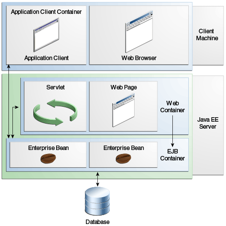

|
Plataforma Java, Edición Empresarial (Java EE) 8 El Tutorial de Java EE |
| Anterior | Siguiente | Contenidos |
Normalmente, las aplicaciones multinivel de cliente ligero son difíciles de escribir porque involucran muchas líneas de código intrincado para manejar transacciones y administración de estado, multiproceso, agrupación de recursos y otros detalles complejos de bajo nivel. La arquitectura Java EE basada en componentes e independiente de la plataforma hace que las aplicaciones sean fáciles de escribir porque la lógica empresarial está organizada en componentes reutilizables. Además, el servidor Java EE proporciona servicios subyacentes en forma de contenedor para cada tipo de componente. Debido a que no tiene que desarrollar estos servicios usted mismo, puede concentrarse en resolver el problema comercial en cuestión.
Los contenedores son la interfaz entre un componente y la funcionalidad específica de plataforma de bajo nivel que admite el componente. Antes de que pueda ejecutarse, se debe ensamblar un componente de cliente web, de enterprise bean o de aplicación en un módulo Java EE y luego desplegarlo en su contenedor.
El proceso de ensamblaje implica especificar la configuración del contenedor para cada componente en la aplicación Java EE y para la propia aplicación Java EE. La configuración del contenedor personaliza el soporte subyacente proporcionado por el servidor Java EE, incluidos servicios como seguridad, gestión de transacciones, búsquedas de API de Java Naming and Directory Interface (JNDI) y conectividad remota. Éstos son algunos de los aspectos más destacados.
El modelo de seguridad de Java EE le permite configurar un componente web o un enterprise bean de modo que solo los usuarios autorizados accedan a los recursos del sistema.
El modelo de transacción de Java EE le permite especificar las relaciones entre los métodos que componen una sola transacción para que todos los métodos de una transacción se traten como una sola unidad.
Los servicios de búsqueda JNDI proporcionan una interfaz unificada para múltiples servicios de directorio y nombres en la empresa para que los componentes de la aplicación puedan acceder a estos servicios.
El modelo de conectividad remota de Java EE gestiona las comunicaciones de bajo nivel entre los clientes y los beans empresariales. Después de que se crea un enterprise bean, un cliente invoca métodos en él como si estuviera en la misma máquina virtual.
Debido a que la arquitectura Java EE proporciona servicios configurables, los componentes dentro de la misma aplicación pueden comportarse de manera diferente según el lugar donde se implementen. Por ejemplo, un enterprise bean puede tener una configuración de seguridad que le permita un cierto nivel de acceso a los datos de la base de datos en un entorno de producción y otro nivel de acceso a la base de datos en otro entorno de producción.
El contenedor también administra servicios no configurables, como los ciclos de vida de servlets y beans de empresa, agrupación de recursos de conexión de bases de datos, persistencia de datos y acceso a las API de la plataforma Java EE (consulte IPA de Java EE 8 ).
El proceso de implementación instala los componentes de la aplicación Java EE en los contenedores de Java EE, como se ilustra en la Figura 1-5.

El servidor y los contenedores son los siguientes:
Servidor Java EE: la parte de tiempo de ejecución de un producto Java EE. Un servidor Java EE proporciona contenedores web y EJB.
Contenedor EJB: gestiona la ejecución de enterprise beans para aplicaciones Java EE. Los beans empresariales y su contenedor se ejecutan en el servidor Java EE.
Contenedor web: gestiona la ejecución de páginas web, servlets y algunos componentes EJB para aplicaciones Java EE. Los componentes web y su contenedor se ejecutan en el servidor Java EE.
Contenedor del cliente de la aplicación: gestiona la ejecución de los componentes del cliente de la aplicación. Los clientes de la aplicación y su contenedor se ejecutan en el cliente.
Contenedor de subprogramas: gestiona la ejecución de subprogramas. Consiste en un navegador web y un complemento de Java que se ejecutan juntos en el cliente.
| Anterior | Siguiente | Contenidos |